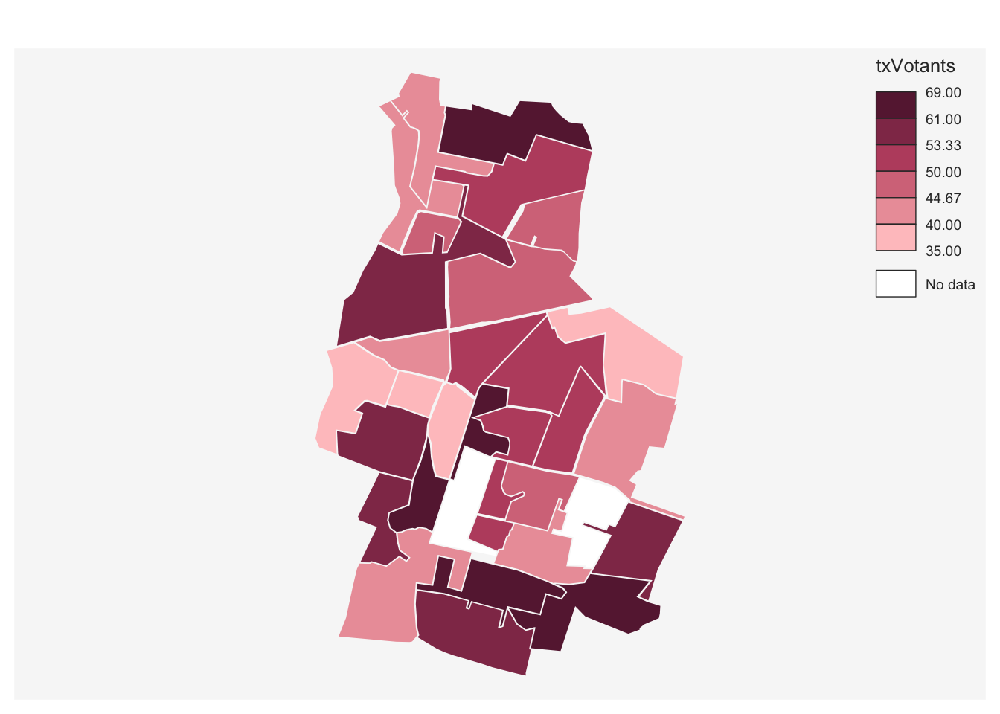

Fonction utulisées - plot - mf_map
library(mapsf)## Le chargement a nécessité le package : sf## Linking to GEOS 3.9.1, GDAL 3.4.0, PROJ 8.1.1; sf_use_s2() is TRUEzone<- st_read("data/vote.gpkg", "zone")## Reading layer `zone' from data source
## `/Users/macbookpro/Desktop/ProjetFinalSig/Ouattara/data/vote.gpkg'
## using driver `GPKG'
## Simple feature collection with 32 features and 5 fields
## Geometry type: MULTIPOLYGON
## Dimension: XY
## Bounding box: xmin: 661088.1 ymin: 6865338 xmax: 663354.7 ymax: 6869043
## Projected CRS: RGF93 / Lambert-93#pour voir le contenu de zone
str(zone)## Classes 'sf' and 'data.frame': 32 obs. of 6 variables:
## $ Layer : chr "_Bureau 32" "_Bureau 24" "_Bureau 15" "_Bureau 14" ...
## $ bureauNo_1: chr NA "ECOLE ELEMENTAIRE OLYMPE DE GOUGES" "SALLE MAURICE PETITJEAN" "ECOLE MATERNELLE LEO LAGRANGE" ...
## $ aire : int 129558 260846 253109 229099 104115 230670 54899 91995 70288 140443 ...
## $ numBureau : int 32 24 15 14 12 30 5 9 28 26 ...
## $ txVotants : int NA 50 41 53 55 54 46 50 66 52 ...
## $ geom :sfc_MULTIPOLYGON of length 32; first list element: List of 1
## ..$ :List of 1
## .. ..$ : num [1:21, 1:2] 662713 662894 662926 663008 662925 ...
## ..- attr(*, "class")= chr [1:3] "XY" "MULTIPOLYGON" "sfg"
## - attr(*, "sf_column")= chr "geom"
## - attr(*, "agr")= Factor w/ 3 levels "constant","aggregate",..: NA NA NA NA NA
## ..- attr(*, "names")= chr [1:5] "Layer" "bureauNo_1" "aire" "numBureau" ...#pour la carte des 31 bureaux de vote de Bondy
plot(zone$geom, col = terrain.colors (31),
border = NA,
main = "Les bureaux de vote de Bondy")mf_map(zone, type = "choro", pal = "Burg",
border = NA, var = "numBureau",)Plus le numero du bureau s’eloigne de 1 plus la couleur est foncé. Les bureaux ont la meme couleur en fonction des zones de bureaux de votes.
#On veux savoir le taux de votant par Zone de bureau
mf_map(zone, type = "choro", pal = "Burg",
border = NA, var = "txVotants", )
Lorsqu’on compare cette carte de taux de votant avec celle precedente, on constate que certain buraux notamment ceux compris entre le numéro 1 et le numero 6 sont les buraux avec les plus fort taux de vote compris entre 50 et 70% . Quant au bureau avec des numéro compris entre 21 et 32 ils acccumulent de faible de taux de votants compris entre 35% et 44%.
Je choisis d’etudier la partie de la population vivant à 5 ou plus dans leur maison. Venant moi même d’une famille nombreuse je trouve celà très interressant et j’aimerais savoir la part de ceux ci dans la population de la ville de Bondy.
Je commence donc faire par un histogramme
vote <- st_read("data/vote.gpkg", "jointure")## Reading layer `jointure' from data source
## `/Users/macbookpro/Desktop/ProjetFinalSig/Ouattara/data/vote.gpkg'
## using driver `GPKG'
## Simple feature collection with 32 features and 18 fields
## Geometry type: MULTIPOLYGON
## Dimension: XY
## Bounding box: xmin: 661088.1 ymin: 6865338 xmax: 663354.7 ymax: 6869043
## Projected CRS: RGF93 / Lambert-93insee <- st_read("data/insee.gpkg", "bondy")## Reading layer `bondy' from data source
## `/Users/macbookpro/Desktop/ProjetFinalSig/Ouattara/data/insee.gpkg'
## using driver `GPKG'
## Simple feature collection with 188 features and 42 fields
## Geometry type: POLYGON
## Dimension: XY
## Bounding box: xmin: 661088.1 ymin: 6865338 xmax: 663354.7 ymax: 6869043
## Projected CRS: RGF93 / Lambert-93names(vote)[c(3,14)] <- c("bureau", "vote")
vote <- vote [, c("bureau", "vote")]
# Pour obtenir un chiffre relatif, on divise le nombre de ménages pauvres par le nombre de ménages total
insee$densite <- (insee$Men_5ind / insee$Men)*100
insee <- insee [, "densite"]
hist(insee$densite, main = "densité des ménages avec ou plus 5 pers")#On s'interesse aux menages composé de 5 personne ou plus (carroyage)
library(mapsf)
data <- read.csv("data/bondyInsee.csv", fileEncoding = "UTF-8")
names(data)## [1] "X" "IdINSPIRE" "Id_carr1km" "I_est_cr" "Id_carr_n"
## [6] "Groupe" "Depcom" "I_pauv" "Id_car2010" "Ind"
## [11] "Men" "Men_pauv" "Men_1ind" "Men_5ind" "Men_prop"
## [16] "Men_fmp" "Ind_snv" "Men_surf" "Men_coll" "Men_mais"
## [21] "Log_av45" "Log_45_70" "Log_70_90" "Log_ap90" "Log_inc"
## [26] "Log_soc" "Ind_0_3" "Ind_4_5" "Ind_6_10" "Ind_11_17"
## [31] "Ind_18_24" "Ind_25_39" "Ind_40_54" "Ind_55_64" "Ind_65_79"
## [36] "Ind_80p" "Ind_inc" "I_est_1km" "code_insee" "nom"
## [41] "nuts2" "wikipedia" "surf_km2"barplot(data$Men_5ind, main = "carroyage INSEE Bondy, disparité de personne par menage", xlab = "carreaux carroyage" ,
ylab = "Nb de ménages avec ou plus de 5 personnes ", col = "blue", border = NA)Grave à cet histograme on constate que la répartition population de Bondy est tres disparate, avec des carreaux allant jusquà 150 ménages de plus de 5 personnes. On va donc faire une carte pour mieux voir cette répartition.
library(mapsf)
data <- st_read("data/vote.gpkg", "inseeBondy")## Reading layer `inseeBondy' from data source
## `/Users/macbookpro/Desktop/ProjetFinalSig/Ouattara/data/vote.gpkg'
## using driver `GPKG'
## Simple feature collection with 188 features and 42 fields
## Geometry type: POLYGON
## Dimension: XY
## Bounding box: xmin: 661088.1 ymin: 6865338 xmax: 663354.7 ymax: 6869043
## Projected CRS: RGF93 / Lambert-93mf_map(data, type = "choro", pal = "Burg",
border = NA, var = "Men_5ind", leg_title = "Nb de ménages avec ou plus de 5 personnes")
mf_layout(title = " Repartition des ménages", credits = "INSEE Carroyage 200 m") On constate que de nombreux ménages ont plus de 5 personnes sous leurs toits.On peut etre parler ici de prédominance de famille nombreuses dans la ville de Bondy.
J’ai aussi chercher à comprendre pourquoi ma palette de couleur était autant sur ma carte mais je n’ai pas trouver de solution pour changer cela.
L6ECSIG Construction et utilisation des SIG